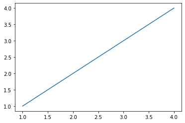
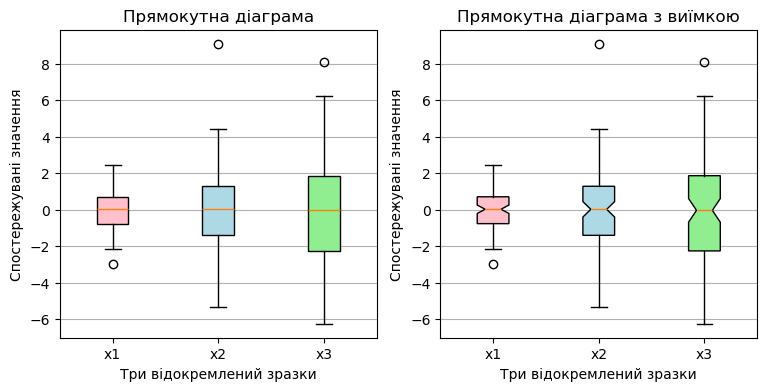
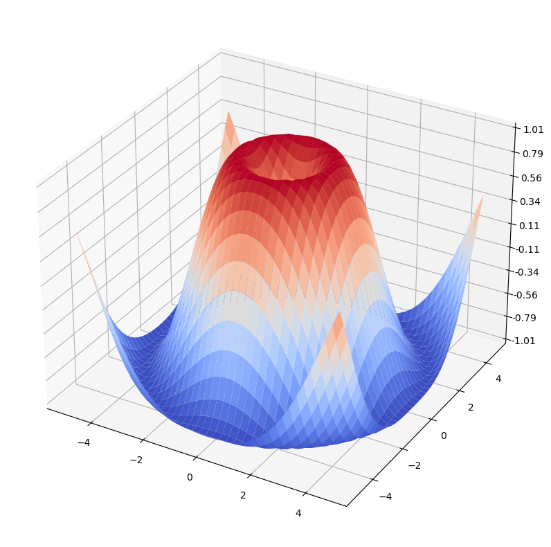

import numpy as np # імпортуємо бібліотекуДодаток C — Основи Jupyter Notebook
Jupyter Notebook — це веб додаток для інтерактивних обчислень. Для його запуску необхідно в консолі перейти в потрібну папку і виконати команду jupyter notebook. Після цього відкриється веб сторінка, де будуть відображатися файли тієї директорії, звідки була запущена команда. Файли Юпітера, які також називаються зошитами, мають розширення ipynb. При натисканні на такий файл він відкривається в інтерактивному режимі.
Кожен окремий файл представляє веб сторінку, яка складається з комірок. Кожна комірка може бути двох видів: 1. Markdown або 2. Code.
C.1 Комірка Markdown
Як можна здогадатися з назви в Markdown осередках можна створювати текст в markdown форматі. Підтримуються різні способи форматування, які можна подивитися за посиланням. Текст, який ви зараз читаєте, також знаходиться в markdown клітинці.
Крім форматування тексту також підтримується можливість створення математичних формул за допомогою LaTex. Формулу можна вбудувати в текст (наприклад, \(e^{i\pi}=-1\)) або створити в окремому рядку:
\[e^x=\sum_{k=0}^\infty \frac{x^k}{k!}\]
Для редагування тексту в markdown осередку необхідно два рази клікнути по ній.
C.2 Комірка Code
Наступна комірка є Сode осередком і в ній можна писати код і виконувати його. Для виконання коду необхідно натиснути Ctrl + Enter(виконати і залишитися в поточній комірці) або Shift + Enter (виконати і перейти в наступну комірку)
Якщо останній рядок коду повертає яке-небудь значення, то воно відображається відразу після комірки
np.random.rand(10) # генеруємо випадкові значенняarray([0.66066316, 0.72739371, 0.52981988, 0.49703974, 0.48385109,
0.12894506, 0.13740195, 0.81722274, 0.05088196, 0.9682992 ])C.3 Автодоповнення та робота з документацією
Для автодоповнення можна використовувати клавішу <TAB > після точки або всередині дужки при виклику функції. При цьому вийде список доступних варіантів, які можна вибрати, щоб автоматично доповнити код. Можете спробувати автодоповнення поставивши курсор після np.random.<TAB>.
В Jupyter є кілька способів викликати документацію. Перший спосіб це використовувати поєднання клавіш Shift + Tab. Другий спосіб поставити знак ? після необхідного модуля
np?Type: module
String form: <module 'numpy' from 'c:\\Users\\Andrii\\anaconda3\\Lib\\site-packages\\numpy\\__init__.py'>
File: c:\users\andrii\anaconda3\lib\site-packages\numpy\__init__.py
Docstring:
NumPy
=====
Provides
1. An array object of arbitrary homogeneous items
2. Fast mathematical operations over arrays
3. Linear Algebra, Fourier Transforms, Random Number Generation
How to use the documentation
----------------------------
Documentation is available in two forms: docstrings provided
with the code, and a loose standing reference guide, available from
`the NumPy homepage <https://numpy.org>`_.
We recommend exploring the docstrings using
`IPython <https://ipython.org>`_, an advanced Python shell with
TAB-completion and introspection capabilities. See below for further
instructions.
The docstring examples assume that `numpy` has been imported as ``np``::
>>> import numpy as np
Code snippets are indicated by three greater-than signs::
>>> x = 42
>>> x = x + 1
Use the built-in ``help`` function to view a function's docstring::
>>> help(np.sort)
... # doctest: +SKIP
For some objects, ``np.info(obj)`` may provide additional help. This is
particularly true if you see the line "Help on ufunc object:" at the top
of the help() page. Ufuncs are implemented in C, not Python, for speed.
The native Python help() does not know how to view their help, but our
np.info() function does.
To search for documents containing a keyword, do::
>>> np.lookfor('keyword')
... # doctest: +SKIP
General-purpose documents like a glossary and help on the basic concepts
of numpy are available under the ``doc`` sub-module::
>>> from numpy import doc
>>> help(doc)
... # doctest: +SKIP
Available subpackages
---------------------
lib
Basic functions used by several sub-packages.
random
Core Random Tools
linalg
Core Linear Algebra Tools
fft
Core FFT routines
polynomial
Polynomial tools
testing
NumPy testing tools
distutils
Enhancements to distutils with support for
Fortran compilers support and more (for Python <= 3.11).
Utilities
---------
test
Run numpy unittests
show_config
Show numpy build configuration
matlib
Make everything matrices.
__version__
NumPy version string
Viewing documentation using IPython
-----------------------------------
Start IPython and import `numpy` usually under the alias ``np``: `import
numpy as np`. Then, directly past or use the ``%cpaste`` magic to paste
examples into the shell. To see which functions are available in `numpy`,
type ``np.<TAB>`` (where ``<TAB>`` refers to the TAB key), or use
``np.*cos*?<ENTER>`` (where ``<ENTER>`` refers to the ENTER key) to narrow
down the list. To view the docstring for a function, use
``np.cos?<ENTER>`` (to view the docstring) and ``np.cos??<ENTER>`` (to view
the source code).
Copies vs. in-place operation
-----------------------------
Most of the functions in `numpy` return a copy of the array argument
(e.g., `np.sort`). In-place versions of these functions are often
available as array methods, i.e. ``x = np.array([1,2,3]); x.sort()``.
Exceptions to this rule are documented.C.4 Magic команди
Jupyter підтримує набір так званих “чарівних” (magic) команд. Це різні корисні команди, які не є частиною Python. Всі ці команди починаються з %.
Можна безпосередньо завантажити вміст зовнішнього файлу в комірку за допомогою команди %load
# %load code/magic_example.py
def square(x): # ініціалізуємо функцію знаходження квадрату вхідного значення
"""
Squares given number
"""
return x ** 2 # повертаємо значення
print(square(42)) # виводимо результат1764З корисних команд також можна відзначити команду %timeit, яка виконує код багато разів і виводить середній час виконання коду
%timeit L = [n ** 2 for n in range(1000)]377 µs ± 21.4 µs per loop (mean ± std. dev. of 7 runs, 1,000 loops each)Список усіх magic команд можна подивитися окремою командою %lsmagic.
C.5 Робота з графікою
У Python є багато бібліотек для візуалізації даних. Більшість з них інтегруються з Jupyter і відображають графіки.
import matplotlib.pyplot as plt # імпортуємо бібліотеку
# вбудовуємо виведені рисунки в юпітеровський ноутбук
%matplotlib inline
plt.plot([1, 4], [1, 4]); # виводимо лінію за двома точками
Або будуємо декілька графіків:
all_data = [np.random.normal(0, std, size=100) for std in range(1, 4)] # генеруємо список значень із нормального розподілу
labels = ['x1', 'x2', 'x3'] # ініціалізуємо список міток
fig, axes = plt.subplots(nrows=1, ncols=2, figsize=(9, 4)) # ініціалізуємо об'єкт матриці рисунків
# прямокутна коробчаста діаграма
bplot1 = axes[0].boxplot(all_data,
vert=True, # вертикальне вирівнювання
patch_artist=True, # заповнити кольором
labels=labels) # використовується для позначення підписів на вісі x
axes[0].set_title('Прямокутна діаграма') # встановлюємо титулку для першого рисунку
# побудова коробчастої діаграми з виїмкою
bplot2 = axes[1].boxplot(all_data,
notch=True,
vert=True, # вертикальне вирівнювання
patch_artist=True, # заповнити кольором
labels=labels) # використовується для позначення підписів на вісі x
axes[1].set_title('Прямокутна діаграма з виїмкою') # встановлюємо титулку для другого рисунку
# заповнити кольорами
colors = ['pink', 'lightblue', 'lightgreen']
for bplot in (bplot1, bplot2):
for patch, color in zip(bplot['boxes'], colors):
patch.set_facecolor(color)
# додати сітку з горизонтальних ліній
for ax in axes:
ax.yaxis.grid(True)
ax.set_xlabel('Три відокремлений зразки')
ax.set_ylabel('Спостережувані значення')
Або тривимірну графіку:
from mpl_toolkits.mplot3d import Axes3D
from matplotlib import cm
from matplotlib.ticker import LinearLocator, FormatStrFormatter
import numpy as np
fig = plt.figure(figsize=(10, 10)) # ініціалізуємо об'єкт рисунок
ax = fig.add_subplot(projection='3d') # додаємо до об'єкту тривимірне представлення
# ініціалізуємо дані
X = np.arange(-5, 5, 0.25)
Y = np.arange(-5, 5, 0.25)
X, Y = np.meshgrid(X, Y) # заповнюємо поверхню значеннями за двома вісями
R = np.sqrt(X**2 + Y**2)
Z = np.sin(R) # ініціалізуємо значення по вісі Oz
# будуємо поверхню
surf = ax.plot_surface(X, Y, Z, cmap=cm.coolwarm) # будуємо тривимірну поверхню по заданим значенням
ax.set_zlim(-1.01, 1.01) # встановлюємо границі по вісі Oz
ax.zaxis.set_major_locator(LinearLocator(10)) # встановлюємо 10 граничних ліній по вісі Oz
ax.zaxis.set_major_formatter(FormatStrFormatter('%.02f')) # визначаємо формат виведення значень
C.6 Інші можливості
Для Jupyter Notebook було створено велику кількість плагінів. Наприклад, можна вбудовувати відео з youtube:
from IPython.display import YouTubeVideo
YouTubeVideo('kjBOesZCoqc')Або інтерактивні карти (дана комірка відобразиться тільки якщо у вас встановлений folium. Якщо у вас нічого не відображається, то можете пропустити даний приклад, він далі не знадобиться)
Встановити необхідну бібліотеку можна через команду pip install назва бібліотеки, яку варто прописати в консолі, як представлено в прикладі нижче:

Або, як варіант, можна прописати команду прямо в комірці середовища Jupyter Notebook, як представлено в прикладі нижче:
!pip install foliumimport folium
m = folium.Map(zoom_start=12, location=[47.89829743895897, 33.36626740165739])
mMake this Notebook Trusted to load map: File -> Trust Notebook
Або вбудувати будь-який інший шматок HTML за допомогою магічної команди %%html. Нижче наведено приклад вбудовування посту з Твіттеру:
%%html
<blockquote class="twitter-tweet" data-lang="en"><p lang="en" dir="ltr">Replace "AI" with "matrix multiplication & gradient descent" in the calls for "government regulation of AI" to see just how absurd they are</p>— Ben Hamner (@benhamner) <a href="https://twitter.com/benhamner/status/892136662171504640?ref_src=twsrc%5Etfw">July 31, 2017</a></blockquote>
<script async src="https://platform.twitter.com/widgets.js" charset="utf-8"></script>Replace "AI" with "matrix multiplication & gradient descent" in the calls for "government regulation of AI" to see just how absurd they are
— Ben Hamner (@benhamner) July 31, 2017
C.7 Гарячі клавіші
Багато дій можна виконати за допомогою так званих гарячих клавіш. Список гарячих клавіш можна знайти в меню Help - Keyboard shortcuts. Нижче наведено список найбільш корисних поєднань:
| Ключ | Опис |
|---|---|
| Esc | вийти з режиму редагування та виділити поточну комірку |
| Enter | перейти в режим редагування поточної комірки |
| Ctrl+S, S | зберегти файл |
| Ctrl+Enter | виконати код і залишитися в поточній комірці |
| Shift + Enter | виконати код і перейти в наступну клітинку |
| Shift + Tab | виводить спливаюче вікно з документацією |
| a | додати комірку згори (above) |
| b | додати комірку знизу (below) |
| c | скопіювати комірку |
| v | вставити скопійовану клітинку |
| dd | видалити комірку |
| z | скасування останньої дії |